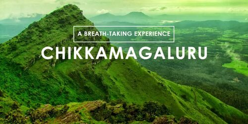

Exploring Karnataka - Chikkamagalur
Escape to the lush hills of Chikkamagalur, Karnataka's hidden gem and a paradise for coffee lovers and nature enthusiasts alike. Discover misty mountains, sprawling coffee plantations, and serene temples as you unwind in this charming hill station. Whether you're trekking the Western Ghats, savoring freshly brewed coffee, or soaking in breathtaking views, Chikkamagalur offers an unforgettable retreat into nature’s lap.
Read More

Coorg - The Scotland of India
Known as the 'Scotland of India,' Coorg is a haven of misty hills, dense forests, and rolling coffee plantations. This enchanting region offers a perfect blend of natural beauty, rich culture, and adventure.
Read More

NITK beach - The only NIT with its own beach
NITK Beach, a unique gem on the campus of the National Institute of Technology Karnataka, is the only NIT with its own private beach.
Read More